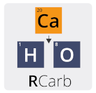

RCarb-package.RdThe package provides a dose rate modelling for carbonate-rich samples in the context of trapped charged dating (e.g., luminescence dating) applications.

| Package: | RCarb |
| Type: | Package |
| Version: | 0.1.0 |
| Date: | 2018-10-03 |
| License: | GPL-3 |
| Package: |
This package bases on a 'MATLAB' programme with name 'Carb', details can be found the
following references:
Mauz, B., Hoffmann, D., 2014. What to do when carbonate replaced water: Carb, the model for estimating the dose rate of carbonate-rich samples. Ancient TL 32, 24–32. http://ancienttl.org/ATL_32-2_2014/ATL_32-2_Mauz_p24-32.pdf
Nathan, R.P., Mauz, B., 2008. On the dose-rate estimate of carbonate-rich sediments for trapped charge dating. Radiation Measurements 43, 14–25. https://dx.doi.org/10.1016/j.radmeas.2007.12.012
Further reading
Nathan, R.P., 2010. Numerical modelling of environmental dose rate and its application to trapped-charge dating. DPhil thesis, St Hugh’s College, Oxford.